TUGAS 2 – BASIS DATA (MSIM4206)
Implementasi ERD Rumah Sakit ke Basis Data MySQL/MariaDB pada XAMPP
| Nama Mahasiswa | : | Farhan Aditya |
| NIM | : | 054750333 |
| Program Studi | : | Sistem Informasi |
SOAL
Berdasarkan Entity Relationship Diagram (ERD) kasus rumah sakit, buatlah basis data MySQL/MariaDB pada XAMPP dengan tabel dokter, pasien, administrator, pasien_dokter, daftar, dan dokter_admin, lengkap dengan rincian atribut yang sesuai. Kegiatan praktik dilaporkan dalam rekaman video yang memuat: (a) perkenalan identitas mahasiswa, (b) langkah-langkah praktik beserta aktivitas mahasiswa, (c) hasil praktik, dan (d) kata penutup.
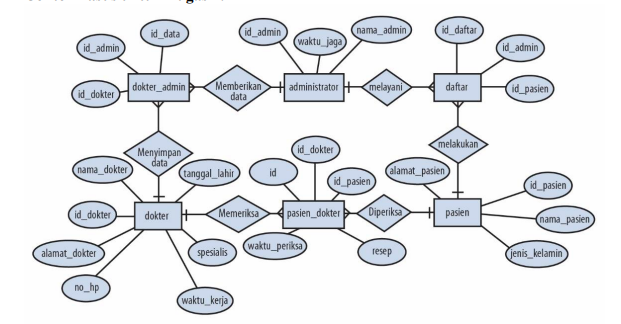
JAWAB
A. Langkah-Langkah Praktik
A.1 Analisis ERD
ERD pada soal terdiri dari enam entitas. Setiap entitas dibuat menjadi satu tabel, dan relasi antar entitas diwujudkan dengan foreign key.
| Tabel | Atribut | Tipe Data | Keterangan |
|---|---|---|---|
| administrator | id_admin | INT(3) | Primary Key, AUTO_INCREMENT |
| nama_admin | VARCHAR(30) | ||
| waktu_jaga | VARCHAR(100) | ||
| dokter | id_dokter | INT(3) | Primary Key, AUTO_INCREMENT |
| nama_dokter | VARCHAR(30) | ||
| alamat_dokter | VARCHAR(100) | ||
| tanggal_lahir | DATE | ||
| no_hp | VARCHAR(15) | ||
| spesialis | VARCHAR(30) | ||
| waktu_kerja | VARCHAR(100) | ||
| pasien | id_pasien | INT(3) | Primary Key, AUTO_INCREMENT |
| nama_pasien | VARCHAR(30) | ||
| alamat_pasien | VARCHAR(100) | ||
| jenis_kelamin | INT(1) | 1 = laki-laki, 2 = perempuan | |
| dokter_admin | id_data | INT(3) | Primary Key, AUTO_INCREMENT |
| id_dokter | INT(3) | Foreign Key → dokter.id_dokter | |
| id_admin | INT(3) | Foreign Key → administrator.id_admin | |
| pasien_dokter | id | INT(3) | Primary Key, AUTO_INCREMENT |
| id_dokter | INT(3) | Foreign Key → dokter.id_dokter | |
| id_pasien | INT(3) | Foreign Key → pasien.id_pasien | |
| waktu_periksa | DATE | ||
| resep | VARCHAR(100) | ||
| daftar | id_daftar | INT(3) | Primary Key, AUTO_INCREMENT |
| id_pasien | INT(3) | Foreign Key → pasien.id_pasien | |
| id_admin | INT(3) | Foreign Key → administrator.id_admin |
Relasi yang dibentuk (semua one-to-many):
| Relasi pada ERD | Tabel Induk (PK) | Tabel Anak (FK) |
|---|---|---|
| Memberikan data | administrator.id_admin | dokter_admin.id_admin |
| Menyimpan data | dokter.id_dokter | dokter_admin.id_dokter |
| Melayani | administrator.id_admin | daftar.id_admin |
| Melakukan | pasien.id_pasien | daftar.id_pasien |
| Memeriksa | dokter.id_dokter | pasien_dokter.id_dokter |
| Diperiksa | pasien.id_pasien | pasien_dokter.id_pasien |
A.2 Menjalankan Layanan Basis Data
Jalankan modul Apache dan MySQL/MariaDB pada XAMPP Control Panel (atau menggunakan container Docker). Pastikan status service telah aktif dan siap menerima koneksi.
A.3 Masuk ke MySQL/MariaDB Monitor
Buka terminal / Command Prompt, lalu masuk ke MySQL monitor sebagai user root:
docker exec -it mysql_tugas2 mysql -u root -proot
(Atau via CMD XAMPP: cd c:\xampp\mysql\bin lalu jalankan mysql -u root)
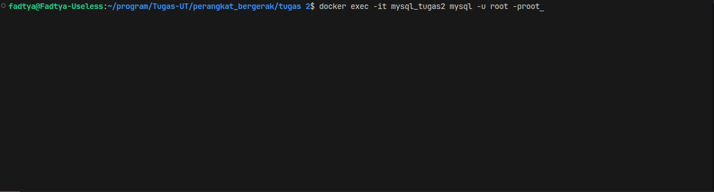
Tampilkan daftar basis data yang tersedia saat ini:
SHOW DATABASES;
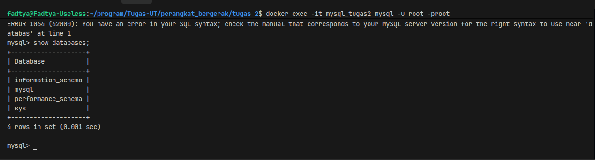
A.4 Membuat Basis Data rumah_sakit (DDL)
Buat basis data baru bernama rumah_sakit, lalu verifikasi dan aktifkan untuk digunakan:
CREATE DATABASE rumah_sakit;
SHOW DATABASES;
USE rumah_sakit;
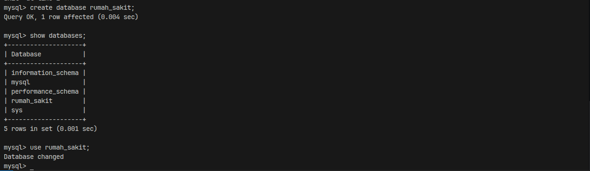
A.5 Membuat Tabel (DDL)
Tabel yang tidak memiliki foreign key dibuat lebih dulu, yaitu administrator, dokter, dan pasien. Setelah itu dibuat tabel anak yaitu dokter_admin, pasien_dokter, dan daftar.
1) Tabel administrator
CREATE TABLE administrator (
id_admin INT(3) PRIMARY KEY AUTO_INCREMENT,
nama_admin VARCHAR(30),
waktu_jaga VARCHAR(100)
);
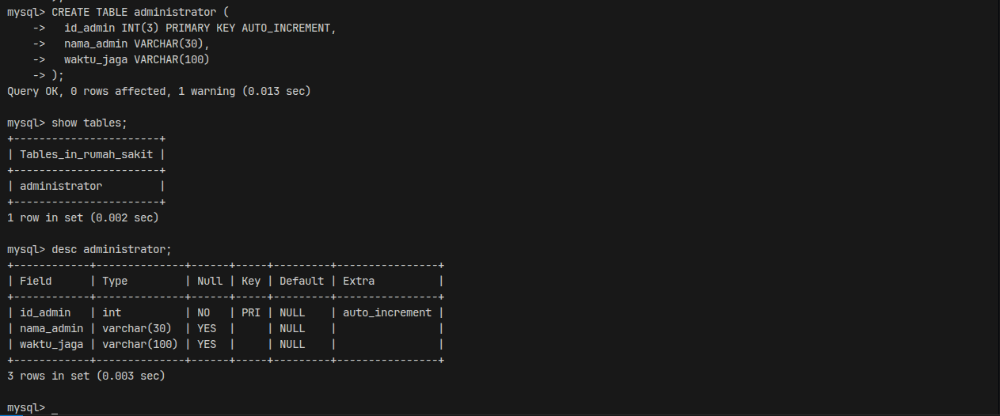
2) Tabel dokter
CREATE TABLE dokter (
id_dokter INT(3) PRIMARY KEY AUTO_INCREMENT,
nama_dokter VARCHAR(30),
alamat_dokter VARCHAR(100),
tanggal_lahir DATE,
no_hp VARCHAR(15),
spesialis VARCHAR(30),
waktu_kerja VARCHAR(100)
);
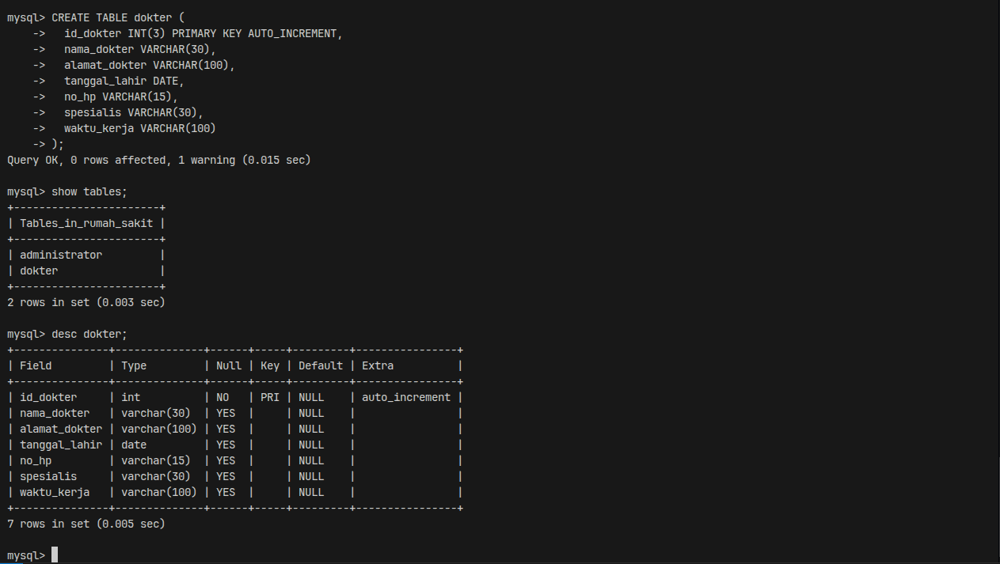
3) Tabel pasien
CREATE TABLE pasien (
id_pasien INT(3) PRIMARY KEY AUTO_INCREMENT,
nama_pasien VARCHAR(30),
alamat_pasien VARCHAR(100),
jenis_kelamin INT(1)
);
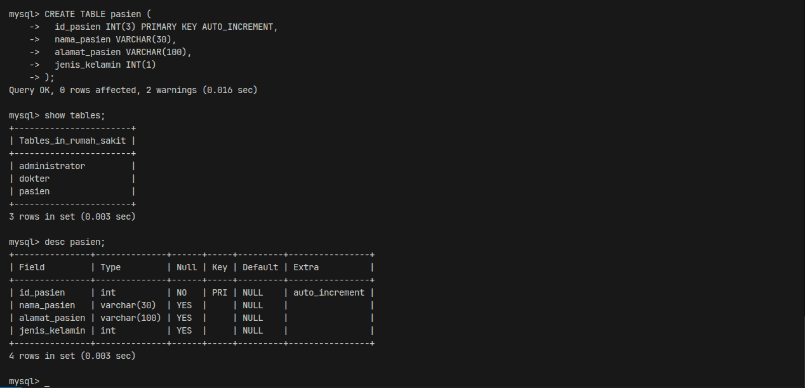
4) Tabel dokter_admin
CREATE TABLE dokter_admin (
id_data INT(3) PRIMARY KEY AUTO_INCREMENT,
id_dokter INT(3),
id_admin INT(3)
);
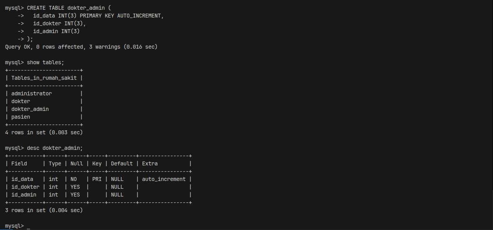
5) Tabel pasien_dokter
CREATE TABLE pasien_dokter (
id INT(3) PRIMARY KEY AUTO_INCREMENT,
id_dokter INT(3),
id_pasien INT(3),
waktu_periksa DATE,
resep VARCHAR(100)
);
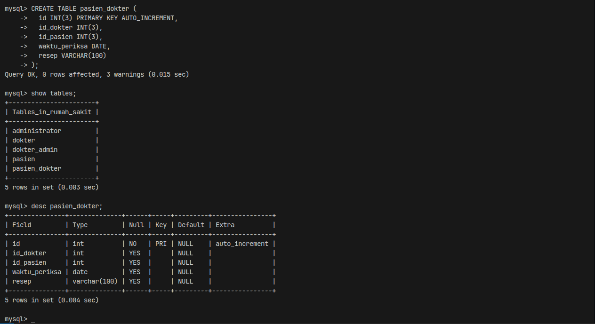
6) Tabel daftar
CREATE TABLE daftar (
id_daftar INT(3) PRIMARY KEY AUTO_INCREMENT,
id_pasien INT(3),
id_admin INT(3)
);
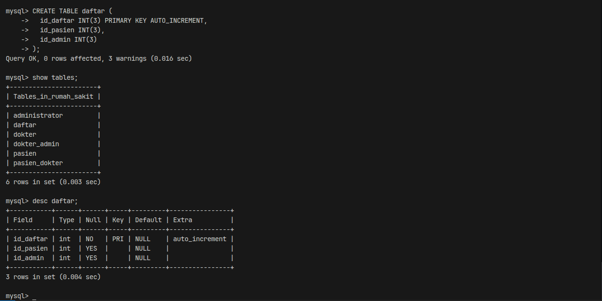
Periksa seluruh tabel yang sudah selesai dibuat:
SHOW TABLES;
DESC pasien;
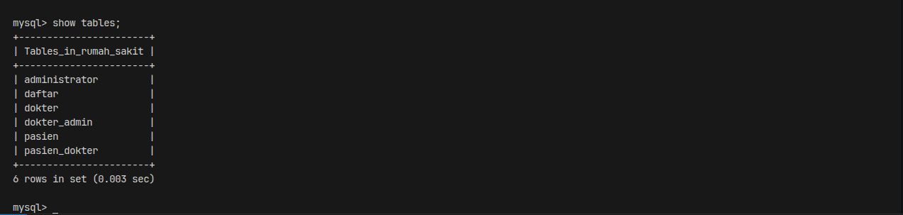
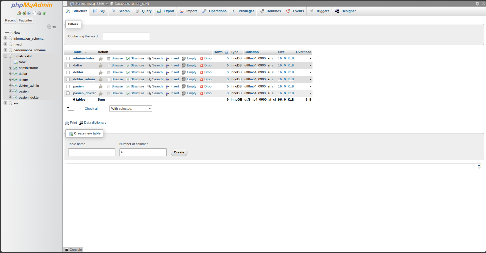
A.6 Membuat Relasi Antar Tabel (Foreign Key)
Relasi dapat dibuat lewat menu Designer phpMyAdmin atau lewat perintah SQL DDL. Pada praktik ini disediakan kedua cara.
Cara 1 – Perintah SQL DDL (Terminal atau Menu SQL phpMyAdmin)
- Relasi tabel
dokter_admin(menghubungkan kedokterdanadministrator):
ALTER TABLE dokter_admin
ADD CONSTRAINT fk_dokter_admin_dokter
FOREIGN KEY (id_dokter) REFERENCES dokter(id_dokter)
ON DELETE CASCADE ON UPDATE CASCADE,
ADD CONSTRAINT fk_dokter_admin_admin
FOREIGN KEY (id_admin) REFERENCES administrator(id_admin)
ON DELETE CASCADE ON UPDATE CASCADE;
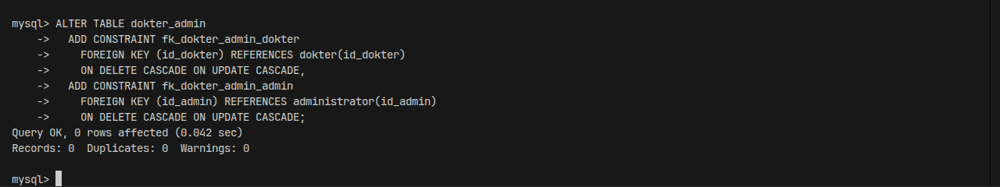
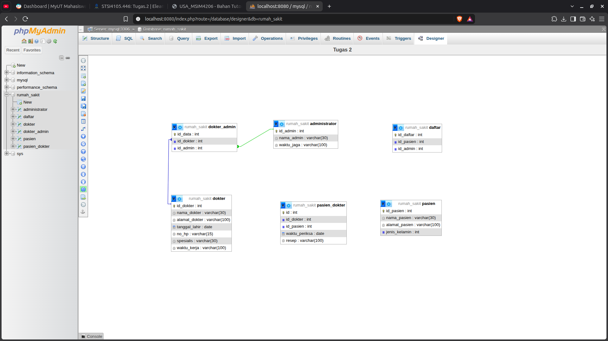
- Relasi tabel
daftar(menghubungkan kepasiendanadministrator):
ALTER TABLE daftar
ADD CONSTRAINT fk_daftar_pasien
FOREIGN KEY (id_pasien) REFERENCES pasien(id_pasien)
ON DELETE CASCADE ON UPDATE CASCADE,
ADD CONSTRAINT fk_daftar_admin
FOREIGN KEY (id_admin) REFERENCES administrator(id_admin)
ON DELETE CASCADE ON UPDATE CASCADE;
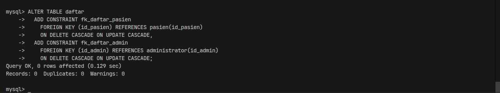
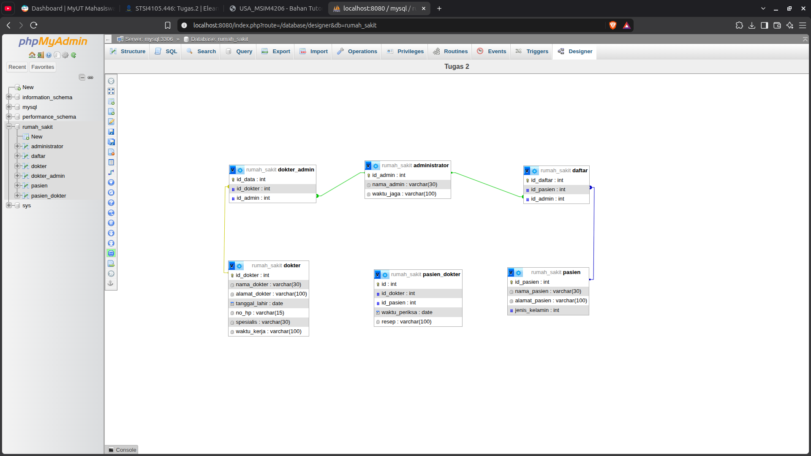
- Relasi tabel
pasien_dokter(menghubungkan kedokterdanpasien):
ALTER TABLE pasien_dokter
ADD CONSTRAINT fk_pasien_dokter_dokter
FOREIGN KEY (id_dokter) REFERENCES dokter(id_dokter)
ON DELETE CASCADE ON UPDATE CASCADE,
ADD CONSTRAINT fk_pasien_dokter_pasien
FOREIGN KEY (id_pasien) REFERENCES pasien(id_pasien)
ON DELETE CASCADE ON UPDATE CASCADE;
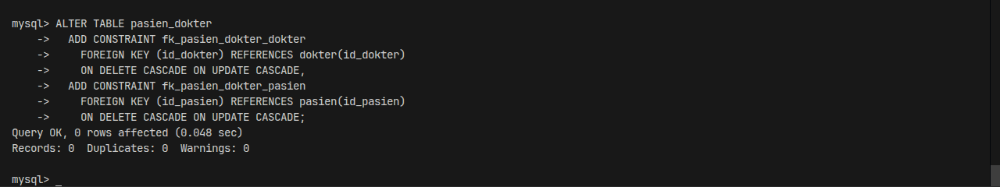

ON DELETE CASCADE dan ON UPDATE CASCADE dipilih agar data pada tabel anak ikut terhapus atau berubah ketika data pada tabel induk dihapus atau diubah, sehingga integritas referensial data tetap konsisten.
Cara 2 – Designer phpMyAdmin
- Buka browser menuju phpMyAdmin (
http://localhost/phpmyadminatauhttp://localhost:8080), pilih basis data rumah_sakit. - Pada tabel
dokter_admin,daftar, danpasien_dokter, pastikan kolom yang akan menjadi foreign key sudah memiliki index (menu Structure → Index). - Buka tab Designer, lalu posisikan letak tabel agar rapi dan mudah dibaca.
- Klik tombol Create relationship, klik kolom primary key pada tabel induk sebagai referenced key, lalu klik kolom foreign key pada tabel anak.
- Pada kotak dialog Create relationship FOREIGN KEY, atur opsi CASCADE pada on delete dan on update, kemudian klik OK.
- Ulangi langkah di atas hingga keenam relasi terbentuk, lalu klik Save page.
A.7 Verifikasi Relasi
Jalankan query ke information_schema untuk memeriksa apakah seluruh foreign key sudah terdaftar aktif:
SELECT TABLE_NAME, COLUMN_NAME, REFERENCED_TABLE_NAME, REFERENCED_COLUMN_NAME
FROM information_schema.KEY_COLUMN_USAGE
WHERE TABLE_SCHEMA = 'rumah_sakit'
AND REFERENCED_TABLE_NAME IS NOT NULL;
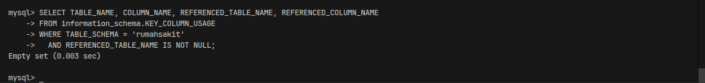
A.8 Uji Relasi dengan Data Contoh (Opsional)
Data contoh dimasukkan untuk menguji integritas dan fungsi relasi antar tabel. Urutan pengisian dimulai dari tabel induk (master), baru kemudian tabel anak:
INSERT INTO administrator (nama_admin, waktu_jaga) VALUES ('Siti Aminah', 'Senin-Jumat 08.00-16.00');
INSERT INTO dokter (nama_dokter, alamat_dokter, tanggal_lahir, no_hp, spesialis, waktu_kerja)
VALUES ('Budi Harmoko', 'Jl. Melati No. 1 Jakarta', '1985-04-12', '081234567890', 'Umum', 'Senin-Rabu 09.00-14.00');
INSERT INTO pasien (nama_pasien, alamat_pasien, jenis_kelamin) VALUES ('Andi Pratama', 'Jl. Mawar No. 5 Bekasi', 1);
INSERT INTO daftar (id_pasien, id_admin) VALUES (1, 1);
INSERT INTO dokter_admin (id_dokter, id_admin) VALUES (1, 1);
INSERT INTO pasien_dokter (id_dokter, id_pasien, waktu_periksa, resep) VALUES (1, 1, '2026-10-18', 'RSP0001');
SELECT p.nama_pasien, pd.waktu_periksa, pd.resep, d.nama_dokter
FROM pasien p
JOIN pasien_dokter pd ON p.id_pasien = pd.id_pasien
JOIN dokter d ON pd.id_dokter = d.id_dokter;
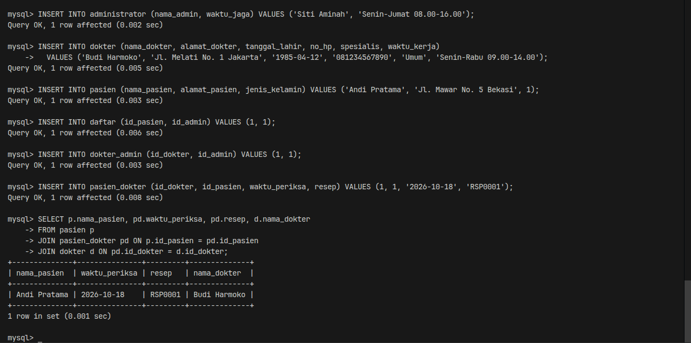
B. Hasil Praktik
Hasil akhir dari praktikum ini adalah basis data rumah_sakit yang memuat enam tabel sesuai ERD rumah sakit, dilengkapi kunci utama (primary key) dan enam relasi foreign key yang saling terhubung secara utuh:
| No | Tabel | Primary Key | Foreign Key |
|---|---|---|---|
| 1 | administrator | id_admin | – |
| 2 | dokter | id_dokter | – |
| 3 | pasien | id_pasien | – |
| 4 | dokter_admin | id_data | id_dokter, id_admin |
| 5 | pasien_dokter | id | id_dokter, id_pasien |
| 6 | daftar | id_daftar | id_pasien, id_admin |
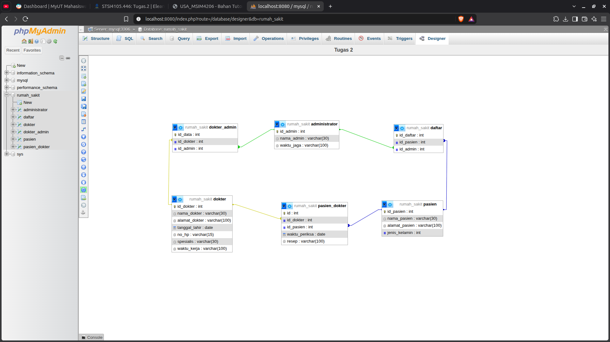
Struktur tabel dan relasi pada basis data telah terverifikasi sesuai dengan spesifikasi ERD kasus rumah sakit pada soal tugas.
Referensi
- Universitas Terbuka. Basis Data (MSIM4206), BMP, bagian Data Definition Language (DDL) dan Data Manipulation Language (DML).
- Suryadi, A. Panduan Praktikum SQL (STSI4105), Edisi 2. Universitas Terbuka, Bab 2 (Prosedur Pelaksanaan Praktik).